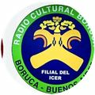

Herramienta comunitaria de seguimiento geográfico para el cantón de Buenos Aires, Puntarenas.
GEOIURIS® © 2026. Derechos reservados. Mapa base © OpenStreetMap contributors. Referencias de localidades: IGN/SNIT, Centros Poblados y Localidades 2026. Las horas posteriores a la salida no constituyen horarios oficiales y dependerán del avance real del recorrido.
Este es el enlace que debe distribuirse a la comunidad. El enlace del transmisor es distinto y no debe publicarse.
 GEOIURIS® · © 2026
GEOIURIS® · © 2026